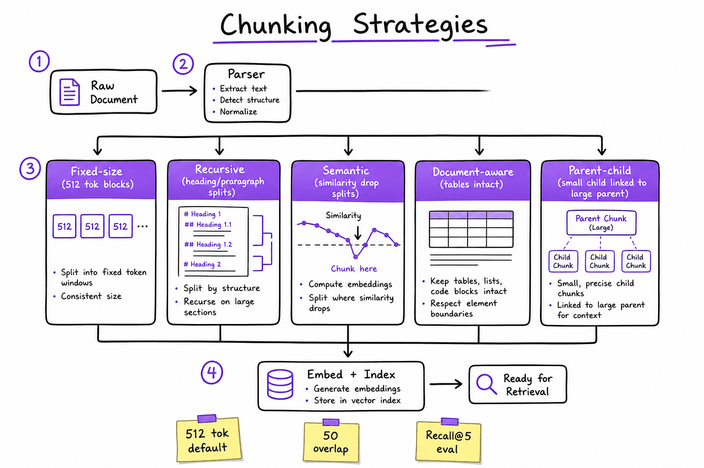
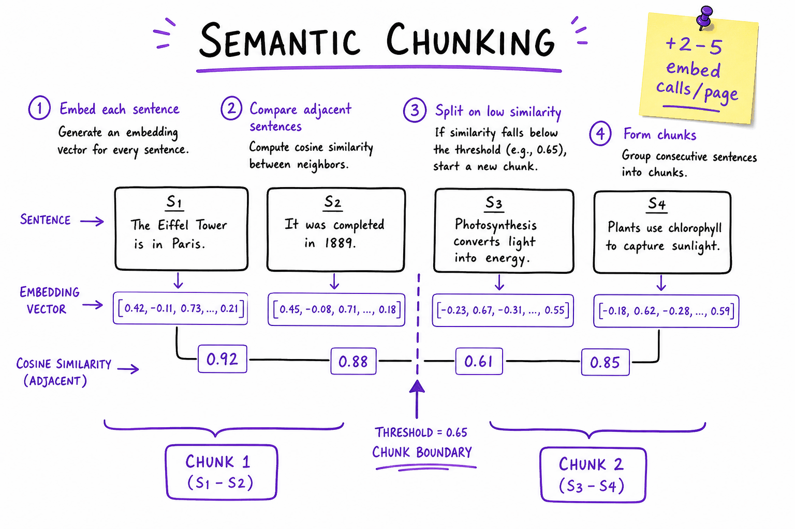
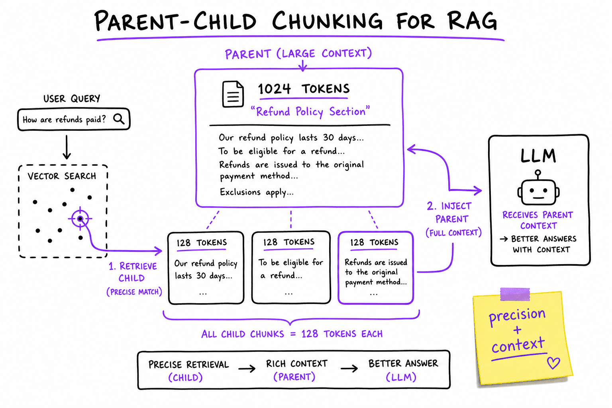

Chunking // Knowledge & RAG
Fixed, recursive, semantic, document-aware and parent-child chunking, and how to tune it.
01 — At a glance
How to split documents for RAG: fixed-size, recursive, semantic, document-aware, and parent-child indexing. Chunking is the silent killer of retrieval quality — tune it before the reranker.

Five chunking strategies: fixed-size, recursive, semantic, document-aware, and parent-child. Parser routes by mime type; all paths converge on metadata-enriched chunks before embed+index.
Quick reference
02 — What & Why
Chunking determines the atomic retrieval unit in RAG. Bad splits cannot be fixed downstream.
Functional
- Split PDF/HTML/Slack/code into searchable units
- Preserve tables, headings, code blocks
- Attach doc_id, section, page, ACL metadata
- Re-chunk on update without orphan vectors
Non-functional
- Deterministic chunk_ids on re-ingest
- Gold passage contained in one chunk >95%
- 10K docs/min CPU throughput
03 — Core Concepts
| Term | Definition | Gotcha |
|---|---|---|
| Chunk size | Target tokens per unit (256–1024) | Count tokens not chars |
| Overlap | Shared tokens between neighbors | 10% of chunk_size typical |
| Recursive | Split on headings then paragraphs | LangChain default |
| Semantic | Split when embedding similarity drops | Extra embed cost |
| Parent-child | Index small, return large parent | Sync on delete |
04 — API Surface
POST /v1/chunk/preview
body: { doc_id, text, strategy: "recursive", chunk_size: 512, overlap: 50 }
-> { chunks: [{ chunk_id, text, token_count, metadata }] }
from langchain_text_splitters import RecursiveCharacterTextSplitter
splitter = RecursiveCharacterTextSplitter(chunk_size=512, chunk_overlap=50)05 — When to Use / When NOT
| Strategy | Use When | Skip When |
|---|---|---|
| Fixed-size | Logs, chat exports, MVP | Structured PDFs |
| Recursive | Mixed markdown/HTML | Need table atomicity |
| Semantic | Long prose, topic shifts | Latency-sensitive ingest |
| Document-aware | PDFs, code, reports | Plain text only |
| Parent-child | Precision + broad context | Docs already <512 tok |
06 — Architecture
Raw Doc -> Parser -> Strategy Router
Fixed | Recursive | Doc-aware | Semantic
-> Overlap pass -> Metadata enricher
-> Optional parent-child linker -> Embed + Index07 — Deep Dive: Fixed & Recursive
splitter = RecursiveCharacterTextSplitter(
chunk_size=512, chunk_overlap=50,
separators=["\n## ", "\n### ", "\n\n", "\n", ". ", " "],
)
# Grid search {256,512,768,1024} on golden Recall@5Start 512/50. Evaluate before tuning embeddings.
08 — Deep Dive: Semantic Chunking

Semantic split at embedding similarity drop threshold
Embed sentences; split when cosine similarity < 0.75. Best for policies and long essays.
09 — Deep Dive: Document-Aware
- PDF: Unstructured/Docling — tables atomic
- Markdown: split on ##; prepend heading to each chunk
- Code: tree-sitter function/class boundaries
10 — Deep Dive: Parent-Child

Retrieve child chunk; inject parent section into LLM context
Index 128–256 tok children; store 1024 tok parent in metadata. Retrieve child, pass parent to LLM.
11 — Deep Dive: Overlap & Eval
Grid search chunk_size × overlap on golden set. Stop when Recall@5 gain <2% for >20% index growth.
The full explanation
12 — Chunking, query rewriting, and failure modes
- Chunk size: 200–800 tokens with some overlap is a common start. Too small loses context; too large dilutes the embedding and wastes prompt space. Splitting on document structure (headings, paragraphs) beats fixed windows.
- Query rewriting: turn a follow-up like "and for last year?" into a standalone query; HyDE embeds a hypothetical answer instead of the question.
- Failures: right answer not retrieved (retrieval problem), retrieved but ignored or contradicted (generation problem), lost in the middle of a long context. Diagnose which before fixing.
13 — Parsing and chunking
- Parsing is underrated: PDFs with tables, headers/footers, code blocks and HTML boilerplate wreck retrieval before embeddings ever matter.
- Split on structure (headings, sections, paragraphs) first, then cap size (~300–800 tokens) with 10–20% overlap.
- Prepend context to each chunk: document title and section path ("Kafka docs › Consumers › Offsets"). Cheap, large recall gains. "Contextual retrieval" goes further: an LLM writes a one-line summary of where the chunk sits.
- Store metadata (source, date, product, permissions) for filtering.
In production
14 — Production & Ops
- Alert on chunk_count 10× median per doc
- Version chunk_strategy in metadata
- Re-chunk via blue/green index swap
- Dashboard: parser failures by mime type
16 — Common Pitfalls
- Splitting tables mid-row
- Char-based not token-based sizing
- Tuning reranker before chunk size
- No overlap on step-by-step docs
- Orphan chunks on re-index